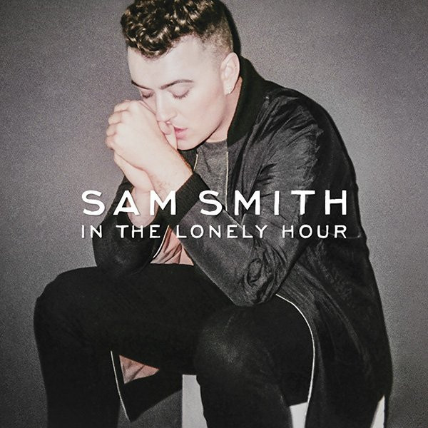

CD
In The Lonely Hour
Sam Smith
Media: — · Sleeve: —
—
Personal
Discogs SuggestedCA$15.61
Discogs MedianCA$15.61
Discogs HighCA$15.61
- Physical Copy ID
- BB-CD-2745
- Year
- 2014
- Label
- Capitol Records, Method Records (4)
- Catalog #
- 3769173, 3769173
- Country
- CACanada
- Genre / Style
- Electronic, Pop · Ballad, Synth-pop